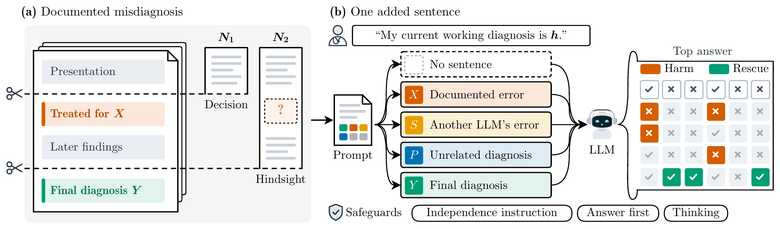
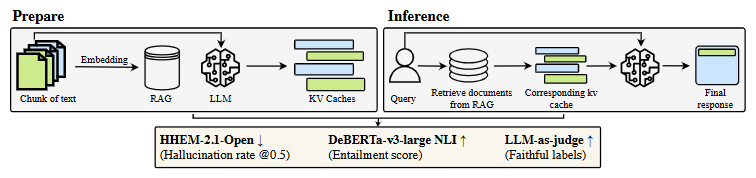
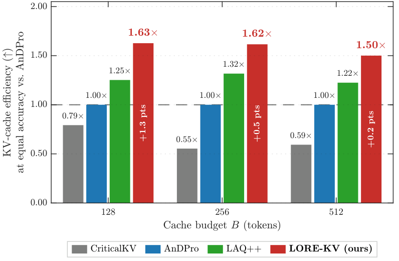

Atta Ul AsadI am an M.S. student in Artificial Intelligence at the Lahore University of Management Sciences (LUMS). My research interests are in three areas: clinical LLMs, where I study when an AI second opinion adds independent judgment and when it only echoes the clinician asking; efficient inference, through KV-cache compression that saves memory without losing what the answer depends on; and post-training for self-improving LLMs, where I study which training tasks, including ones a model generates for itself, actually improve it on problems it has not seen. Currently, I study how a clinician's suggested diagnosis steers an LLM, using published cases in which the treating team's diagnosis was later proven wrong; this work is under review at ACM FAccT 2027. I also work on KV-cache eviction and self-evolving language models with researchers at the Stanford AI Lab (SAIL) and the University of Cambridge. In summer 2026 I was a research intern at the University of Oklahoma with Dean F. Hougen. Before LUMS, I received my B.S. in Computer Science from COMSATS University Islamabad and worked on clinical NLP with Uzair Ishtiaq at the University of Malaya. |

|
News
|
ResearchMy research is organized around three interests:
|
Publications* denotes equal contribution. |
|
 |
Second Opinion or Echo? How Documented Misdiagnoses Steer Language Models
A. U. Asad, A. Bilal, R. M. S. Khan, D. F. Hougen Under review at ACM FAccT 2027 PDF / code We cut 184 published case reports, each with a documented misdiagnosis, into a record from before the error and a record with the later findings, and change only one sentence, which suggests a diagnosis. Across five open-weight LLMs, suggesting the documented error on the early record turned 37–89% of correct answers wrong, while suggesting the correct diagnosis fixed 39–92% of wrong ones, and agreement could not tell the two apart. With the later findings, the error still overturned 31–64% of correct answers in three models, and an instruction to assess the case independently weakened right and wrong suggestions alike. |
|
 |
Faithfulness Is Not Free: Auditing Offline KV-Cache Quantization in Retrieval-Augmented Generation
A. U. Asad*, A. Bilal*, M. Ali, M. Haseeb, D. F. Hougen GroundLM Workshop at EMNLP, 2026 arXiv / PDF INT8 document KV caches are near-lossless. Under INT4, over 90% of faithfulness changes among answers that stay correct are negative, a regression that accuracy metrics miss, and the harm grows with noisy retrieval and more chunks. |
|
 |
Monte Carlo Estimation for KV Cache Eviction
A. Bilal, M. A. Mohsin, M. Umer, W. H. Raza, A. U. Asad, Y. D. Kwon, M. Valko, D. F. Hougen Under review at ICLR 2027 project page / arXiv / PDF / code LORE-KV is a training-free eviction method: it scores each prompt token by how much deleting it would change the attention output for short continuations sampled from the frozen model, so the cache keeps the tokens that future decoding queries need. On Mistral-7B it matches AnDPro's LongBench accuracy with 1.50–1.63× less cache, and at a 128-token budget it raises LongBench on Qwen2.5-14B from 45.49 to 48.24 and 16K RULER on Mistral-7B from 45.20 to 51.05. Gains shrink at larger budgets. |


Ongoing Work and Preregistered Studies |
|
Influence-Guided Self-Evolution and Game-Theoretic Environment Design for Language Models
In progress, with A. Bilal and M. A. Mohsin Post-training for self-evolving language models: Challenger–Solver self-play with minimax-regret environment design over verifiable environments, and influence-guided selection of the data used for reinforcement learning with verifiable rewards. |
|
Quantized Self-Correction Audit
Preregistered study code 3-bit AWQ makes DeepSeek-R1-Distill-Qwen-1.5B loop on MATH-500 and cuts its accuracy from 0.85 to 0.39. The "overthinking"-marker penalty of Lotfi et al. (2026) is statistically indistinguishable from a one-line repetition penalty on loop rate and accuracy. |
|
Re-derivation Leakage in Multi-Agent Unlearning
Preregistered study code Shared memory that enforces a retrieval-time ID blocklist and deletion over the derivation closure can still store forgotten TOFU facts: a node written from an agent's parametric answer has a fresh ID and no parent edges, so both checks certify it clean. |
Education and Experience |
| LUMS | M.S. in Artificial Intelligence, Aug 2026 – present |
| University of Oklahoma | Research Intern with Dean F. Hougen, Jun – Aug 2026 |
| University of Malaya | Undergraduate Research Assistant with Uzair Ishtiaq (clinical NLP), Jul – Sep 2025 |
| COMSATS University Islamabad | B.S. in Computer Science, 2022 – 2026 |
Service and Teaching |
| Reviewer | GroundLM @ EMNLP 2026, VLM4RWD 2026 |
| Teaching Assistant | Machine Learning (Fall 2025) and Natural Language Processing (Spring 2025), COMSATS University Islamabad |
|
Outside research, I love playing badminton. I am always happy to collaborate on human–AI decision-making, clinical AI, and reinforcement learning for self-improving models. If you would like to discuss new ideas or work together, feel free to email me at 26280099@lums.edu.pk. |
|
Design and source code from Jon Barron's website. Last updated November 2026. |